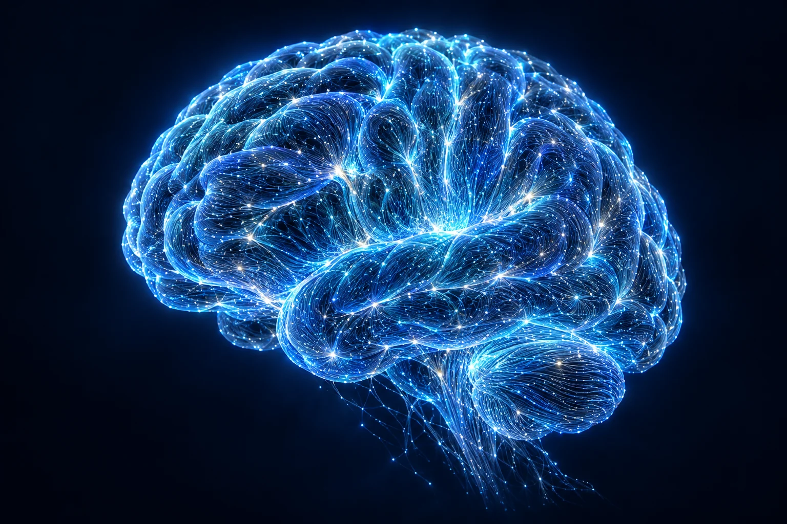
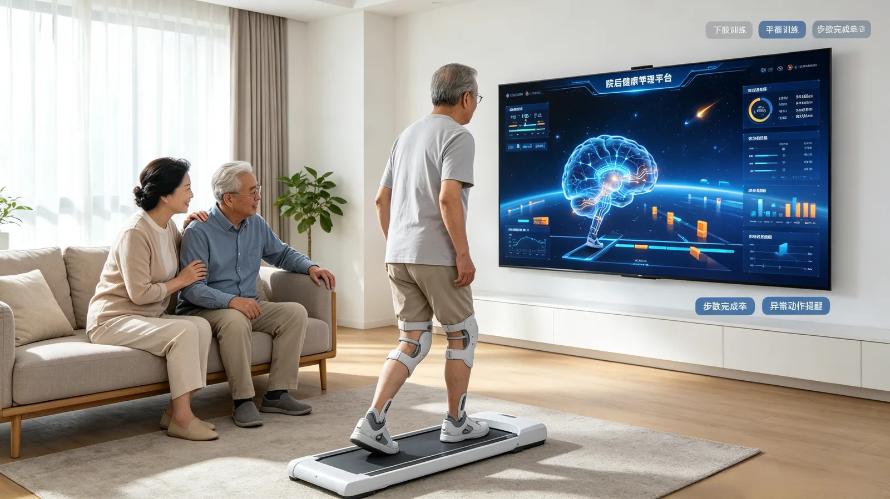
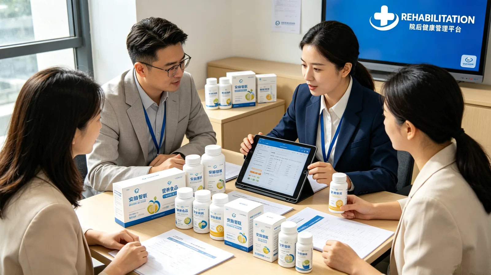

零专用硬件
基于日常手机或电脑摄像头，让训练融入熟悉的居家环境。

用更轻的设备门槛，连接更完整的康复路径。

基于日常手机或电脑摄像头，让训练融入熟悉的居家环境。
融合动作感知与康复知识，辅助评估、记录与个性化管理。
把康复动作变成游戏交互，以即时反馈回应每一份努力。
从评估、计划到训练与随访，让院内院外的管理持续衔接。
视觉评估、训练游戏、专家知识与数据安全，协同支持康复管理。


让技术回归康复需求，把复杂留给平台，把便利带给每一位使用者。
以日常摄像头连接训练
患者 · 专家 · 机构
评估 · 训练 · 分身 · 安全
从院内到家，持续衔接
围绕康复辅具、护理耗材、医用器材、特医食品与上门服务，探索更完整的康复支持场景。

服务与产品，连接康复全程聚焦卒中康复、AI 训练与院后服务的行业观察。

从真实需求出发，为更可及、更连续的康复服务而努力。
创始人 · 连接技术创新与康复需求
以专业康复场景，定义产品问题与服务边界。
把 AI 能力，转化为日常可用的康复体验。
期待携手，共建康复生态